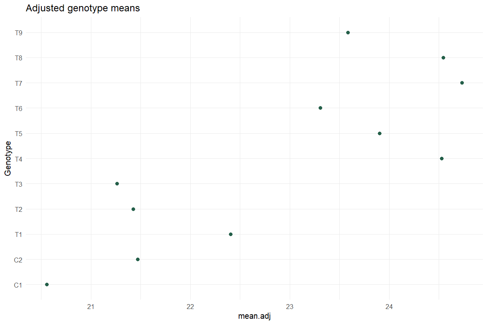

Worked analysis · 1 executable examples
Augmented Trial Analysis
Adjust unreplicated entries using replicated checks
Question and data
Include at least two checks once in every block and each test entry exactly once. Select the checks explicitly; do not infer check status from a treatment name.
Read and report the results
Report adjusted means and the appropriate comparison standard errors. The ANOVA is sequential, with blocks fitted before adjusted genotype effects. Differences from the average adjusted check mean are descriptive contrasts.
Run the examples
From the repository root, restore the locked dependencies and load the app functions. These are source-checkout examples, not an installed package API.
source("tools/example-cases.R")
load_drdesign()In Shiny, select this module from its workflow heading, upload the example CSV, map the columns, review observations and run. Each R example states the analysis options to reproduce.
augmented
Synthetic teaching data; not evidence from a field experiment.
Input
| Block | Genotype | Value |
|---|---|---|
| B1 | C1 | 21.209 |
| B2 | C1 | 19.843 |
| B3 | C1 | 20.621 |
| B1 | C2 | 22.189 |
| B2 | C2 | 20.956 |
| B3 | C2 | 21.263 |
| B1 | T1 | 23.091 |
| B1 | T2 | 22.112 |
Showing up to 8 of 15 observations. The CSV contains every row.
Analysis
data <- research_example("augmented-trial")
result <- run_augmented_trial(data,c("C1","C2"))Computed output
Adjusted means 11 rows
| Genotype | y | std | r | Min | Max | Q25 | Q50 | Q75 | Adjusted mean | SE | block | Is Check | Difference From Check Mean |
|---|---|---|---|---|---|---|---|---|---|---|---|---|---|
| C1 | 20.558 | 0.685 | 3.000 | 19.843 | 21.209 | 20.232 | 20.621 | 20.915 | 20.558 | 0.099 | True | -0.456 | |
| C2 | 21.470 | 0.642 | 3.000 | 20.956 | 22.189 | 21.110 | 21.263 | 21.726 | 21.470 | 0.099 | True | 0.456 | |
| T1 | 23.091 | NA | 1.000 | 23.091 | 23.091 | 23.091 | 23.091 | 23.091 | 22.405 | 0.171 | B1 | False | 1.391 |
| T2 | 22.112 | NA | 1.000 | 22.112 | 22.112 | 22.112 | 22.112 | 22.112 | 21.426 | 0.171 | B1 | False | 0.413 |
| T3 | 21.949 | NA | 1.000 | 21.949 | 21.949 | 21.949 | 21.949 | 21.949 | 21.263 | 0.171 | B1 | False | 0.250 |
| T4 | 23.913 | NA | 1.000 | 23.913 | 23.913 | 23.913 | 23.913 | 23.913 | 24.527 | 0.171 | B2 | False | 3.513 |
| T5 | 23.291 | NA | 1.000 | 23.291 | 23.291 | 23.291 | 23.291 | 23.291 | 23.905 | 0.171 | B2 | False | 2.892 |
| T6 | 22.694 | NA | 1.000 | 22.694 | 22.694 | 22.694 | 22.694 | 22.694 | 23.308 | 0.171 | B2 | False | 2.295 |
| T7 | 24.663 | NA | 1.000 | 24.663 | 24.663 | 24.663 | 24.663 | 24.663 | 24.734 | 0.171 | B3 | False | 3.721 |
| T8 | 24.471 | NA | 1.000 | 24.471 | 24.471 | 24.471 | 24.471 | 24.471 | 24.543 | 0.171 | B3 | False | 3.529 |
| T9 | 23.512 | NA | 1.000 | 23.512 | 23.512 | 23.512 | 23.512 | 23.512 | 23.584 | 0.171 | B3 | False | 2.570 |
ANOVA: blocks then adjusted genotypes 3 rows
| Source / term | df | SS | MS | F | p-value |
|---|---|---|---|---|---|
| Block | 2 | 2.036 | 1.018 | 34.684 | 0.028 |
| Genotype | 10 | 27.022 | 2.702 | 92.076 | 0.011 |
| Residuals | 2 | 0.059 | 0.029 | NA | NA |
LSD comparisons 55 rows
| Comparison | Difference | p-value | sig. |
|---|---|---|---|
| C1 - C2 | -0.912 | 0.023 | * |
| C1 - T1 | -1.847 | 0.017 | * |
| C1 - T2 | -0.869 | 0.070 | . |
| C1 - T3 | -0.706 | 0.100 | |
| C1 - T4 | -3.969 | 0.004 | ** |
| C1 - T5 | -3.348 | 0.005 | ** |
| C1 - T6 | -2.751 | 0.008 | ** |
| C1 - T7 | -4.177 | 0.003 | ** |
| C1 - T8 | -3.985 | 0.004 | ** |
| C1 - T9 | -3.026 | 0.006 | ** |
| C2 - T1 | -0.935 | 0.061 | . |
| C2 - T2 | 0.043 | 0.875 | |
| C2 - T3 | 0.206 | 0.484 | |
| C2 - T4 | -3.057 | 0.006 | ** |
| C2 - T5 | -2.436 | 0.010 | ** |
| C2 - T6 | -1.839 | 0.017 | * |
| C2 - T7 | -3.265 | 0.005 | ** |
| C2 - T8 | -3.073 | 0.006 | ** |
| C2 - T9 | -2.114 | 0.013 | * |
| T1 - T2 | 0.979 | 0.056 | . |
| T1 - T3 | 1.142 | 0.042 | * |
| T1 - T4 | -2.122 | 0.019 | * |
| T1 - T5 | -1.500 | 0.037 | * |
| T1 - T6 | -0.904 | 0.093 | . |
| T1 - T7 | -2.329 | 0.016 | * |
| T1 - T8 | -2.138 | 0.019 | * |
| T1 - T9 | -1.179 | 0.058 | . |
| T2 - T3 | 0.163 | 0.570 | |
| T2 - T4 | -3.101 | 0.009 | ** |
| T2 - T5 | -2.479 | 0.014 | * |
| T2 - T6 | -1.882 | 0.024 | * |
| T2 - T7 | -3.308 | 0.008 | ** |
| T2 - T8 | -3.116 | 0.009 | ** |
| T2 - T9 | -2.157 | 0.018 | * |
| T3 - T4 | -3.264 | 0.008 | ** |
| T3 - T5 | -2.642 | 0.012 | * |
| T3 - T6 | -2.045 | 0.020 | * |
| T3 - T7 | -3.471 | 0.007 | ** |
| T3 - T8 | -3.279 | 0.008 | ** |
| T3 - T9 | -2.320 | 0.016 | * |
| T4 - T5 | 0.622 | 0.124 | |
| T4 - T6 | 1.219 | 0.037 | * |
| T4 - T7 | -0.207 | 0.557 | |
| T4 - T8 | -0.016 | 0.963 | |
| T4 - T9 | 0.943 | 0.086 | . |
| T5 - T6 | 0.597 | 0.133 | |
| T5 - T7 | -0.829 | 0.108 | |
| T5 - T8 | -0.637 | 0.165 | |
| T5 - T9 | 0.322 | 0.392 | |
| T6 - T7 | -1.426 | 0.041 | * |
| T6 - T8 | -1.234 | 0.053 | . |
| T6 - T9 | -0.275 | 0.452 | |
| T7 - T8 | 0.192 | 0.512 | |
| T7 - T9 | 1.151 | 0.042 | * |
| T8 - T9 | 0.959 | 0.058 | . |
Comparison standard errors 4 rows
| Source / term | Std Error Diff. |
|---|---|
| Two Control Treatments | 0.140 |
| Two Augmented Treatments (Same Block) | 0.242 |
| Two Augmented Treatments(Different Blocks) | 0.297 |
| A Augmented Treatment and A Control Treatment | 0.221 |
Reviewed data 15 rows
| Block | Genotype | Value |
|---|---|---|
| B1 | C1 | 21.209 |
| B2 | C1 | 19.843 |
| B3 | C1 | 20.621 |
| B1 | C2 | 22.189 |
| B2 | C2 | 20.956 |
| B3 | C2 | 21.263 |
| B1 | T1 | 23.091 |
| B1 | T2 | 22.112 |
| B1 | T3 | 21.949 |
| B2 | T4 | 23.913 |
| B2 | T5 | 23.291 |
| B2 | T6 | 22.694 |
| B3 | T7 | 24.663 |
| B3 | T8 | 24.471 |
| B3 | T9 | 23.512 |
Software versions 8 rows
| Source / term | Package | Version |
|---|---|---|
| R | 4.5.3 | |
| shiny | shiny | 1.13.0 |
| agricolae | agricolae | 1.3.7 |
| metan | metan | 1.19.0 |
| lme4 | lme4 | 2.0.1 |
| emmeans | emmeans | 2.0.2 |
| SpATS | SpATS | 1.0.20 |
| DiallelAnalysisR | DiallelAnalysisR | 0.6.0 |
Analysis settings 3 rows
| Setting | Value |
|---|---|
| Checks | C1, C2 |
| Alpha | 0.05 |
| Method | Augmented RCBD; Fisher LSD |

Reporting conventions
Tables: estimates and standard errors to 3 decimals; p-values below 0.001 shown as <0.001. Very small or large values use scientific notation. NA means unavailable or not applicable. CSV files retain numerical precision. Confidence levels and multiplicity corrections follow the stated analysis settings; shared letters indicate non-rejection, not equivalence.